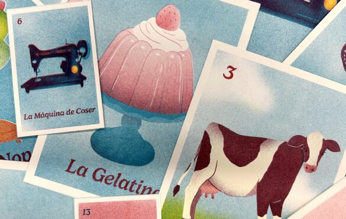

Karla Santana: Lotería
Lotería takes its name and structure from the iconic Mexican card game, repurposing its symbolic imagery as a framework for deeply personal storytelling. Each piece in the series functions like a card drawn from the deck — a moment, a symbol, a feeling — mapping Santana’s relationship to her own cultural identity across the full arc of her life. That relationship, as the work makes clear, is not a simple one. The exhibition holds space for the embarrassment and shame that can accompany cultural identity, particularly across generations and geographies, alongside the profound love, gratitude, and pride that run just as deep and just as true.
Through this series, Santana revisits pivotal stages of her life, pairing personal memory with the cultural symbols that have traveled with her family across generations. The result is a body of work that is at once a family portrait, a self-portrait, and an act of reclamation — a chance to look back at inherited culture not with the eyes of a child who wanted to fit in, but with the clarity and appreciation of an adult who understands what she was given.
Karla Santana is a first generation Mexican-American designer and illustrator from Chicago. As a self-proclaimed “serial-hobbyist,” she enjoys exploring a variety of mediums from Risograph printing, screenprinting, sewing, and crochet, and more. She often combines multiple mediums to create whimsical pieces that integrate nostalgic elements of her childhood with playful characters and a vibrant, character-driven visual language.
Lotería is on view at Spudnik Press, 1821 W. Hubbard St., Chicago, IL 60622. Gallery hours are Monday-Saturday 10am-6pm.
Programs at Spudnik Press are partially supported by grants from the Illinois Arts Council Agency, the Driehaus Foundation, and the Gaylord & Dorothy Donnelley Foundation